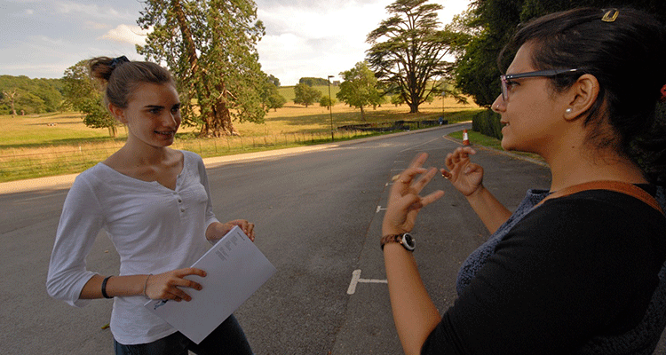

{% extends "base.html" %}
{% block singlephoto %}

{% endblock %}
{% block content %}
Choose the right university
Your education is one of the biggest investments of your life. Choose correctly and you’re happy, fulfilled and working towards success. Choose incorrectly and you’re miserable, frustrated and unemployable.
Deciding what and where to study is a challenge - and heavy university marketing makes it even more confusing.
The Global Paths Student Programme offers inspiring, interactive workshops on purpose, vision and skills to help you establish what to study and why you’re investing in university.
Experience different universities, explore new cities to discover the kind of environment you could live, study and be happy in.
And, meet current students, admissions officers and unbiased experts to answer your individual questions and support you with your UK university decision and application.
You’ll leave GPS feeling reassured, relieved and knowledgeable about the next exciting stage of your life!
{% endblock %}